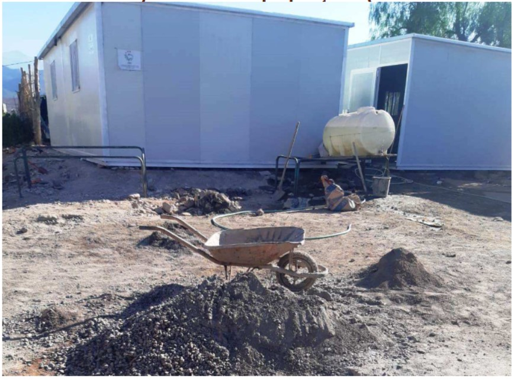

CDRT a récemment achevé un projet ambitieux visant à améliorer les conditions de vie des habitants du village de Taourirt. Dans le cadre de ce projet, le CDRT a été chargé de la distribution de 40 mobil-homes aux résidents de la région.
Ce projet a eu un impact significatif sur la communauté locale, avec 45 familles bénéficiant directement de cette initiative. Chaque famille a reçu non seulement un logement moderne et confortable, mais également un accès à une nouvelle école construite dans le cadre du projet.
Les statistiques montrent une amélioration notable des conditions de vie dans le village :
- Logements distribués : 40 mobil-homes
- Nombre de familles bénéficiaires : 45
- Nouvelle école construite : 1
- Nombre d'enfants scolarisés grâce à la nouvelle école : 120
- Taux d'augmentation de la scolarisation des enfants : +35%
- Réduction du taux de maladies liées à l'habitat insalubre : -50%
- Création d'emplois locaux pour la construction et la maintenance : 25 emplois

Ce projet, financé en partie par des subventions gouvernementales et des dons privés, a non seulement fourni des logements sécurisés et dignes aux résidents, mais a également renforcé l'infrastructure éducative locale, offrant ainsi aux enfants de meilleures opportunités d'apprentissage et de développement.
Le CDRT continue de suivre les progrès de cette initiative et explore des moyens supplémentaires pour soutenir le développement durable de Taourirt et des villages environnants.
.jpg)